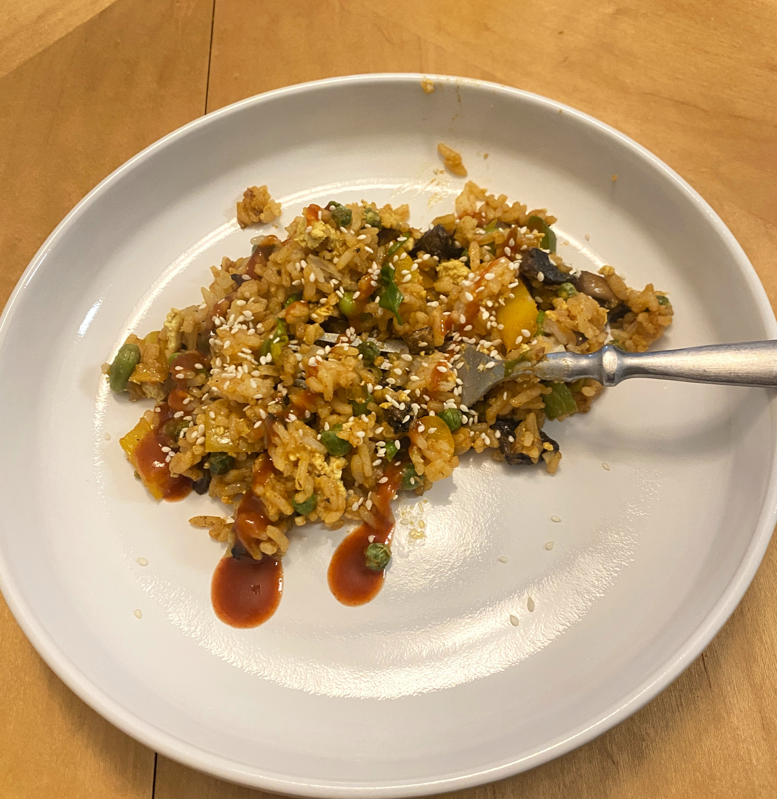

Ingredients
- 1/2 block tofu
- 2 tbsp nooch
- Pinch of turmeric and kala namak
- Garlic salt, pepper, and paprika to taste
- Assorted mushrooms of choice - portobello, oyster, etc.
- 1 tbsp soy sauce
- 2 tsp paprika
- 1 tsp maple syrup
- 1 tsp miso paste
- 2 tbsp nutritional yeast
- Green onions, sliced
- Veggies of choice - peas, broccoli, edamame, cabbage, bell pepper, carrots
- 4 cups day-old rice
- 1 tbsp sesame oil
- 1/2 tsp MSG
- juice from one lime
- Sriracha and sesame seeds to top
Instructions
- Begin by cooking the tofu scramble. Crumble the tofu in a pan with olive oil until lightly brown. Mix in the nutritional yeast, garlic salt, pepper, turmeric, kala namak, and paprika with the tofu. Set aside in a bowl.
- Add the mushrooms to a dry pan and cook down.
- Once the mushrooms have shrunk in size, add soy sauce, paprika, maple syrup, miso paste, and nutritional yeast to the pan.
- Add in the sliced green onion and veggies, Cook down slightly then add the leftover rice.
- Deglaze the pan with more soy sauce if it looks dry. Turn down the heat and add sesame oil, MSG, and lime juice.
- Add in the tofu egg. Top with sriracha, sesame seeds, and green parts of the green onion.